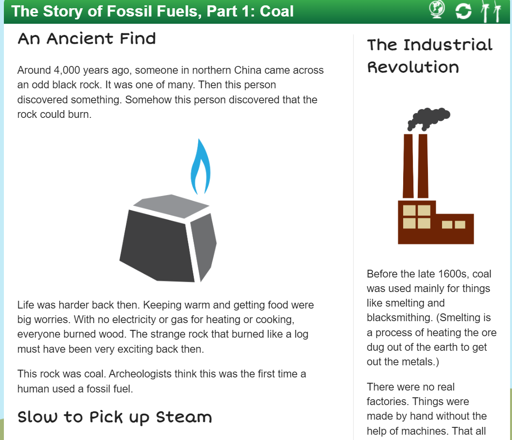
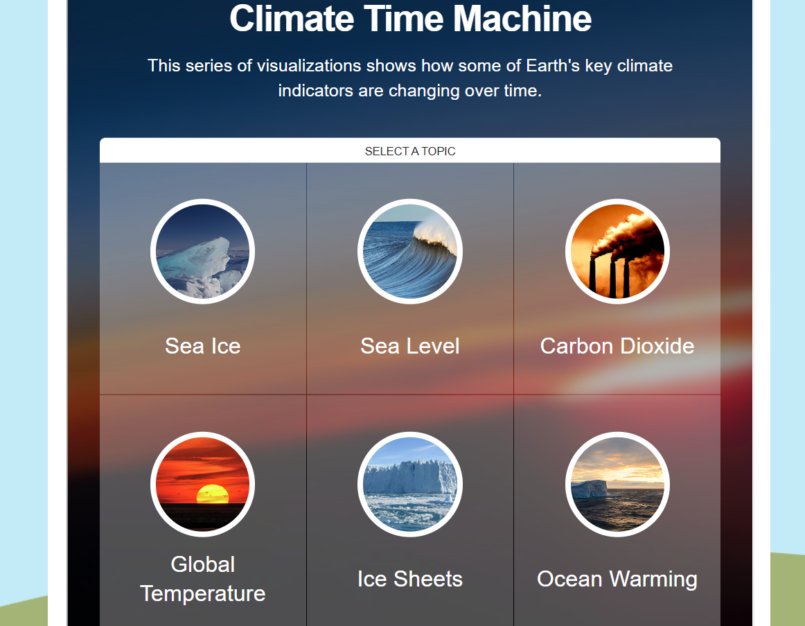
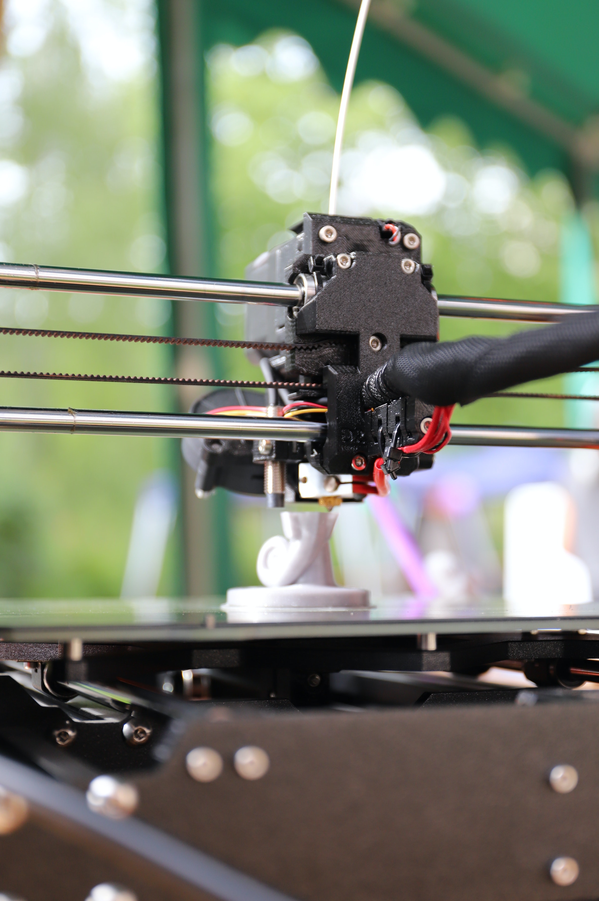

Extend Yourself - Climate Kids: Global Warming Picture Book
 Explore Fossil Fuels
Explore Fossil Fuels
Read through the story of Fossil Fuels. You will learn what they are, the effect they have had on humans, and how they can lead to an increase air pollution. Explore how fossil fuels relate to air pollution.

Explore the Climate Time Machine
Earth has changed a lot over time! Click the other information bubbles on the Climate Time Machine webpage
Climate Time Machine to explore visualizations and see how Earth’s climate indicators have and are continuing to change.

3D Print a Model Satellite
Use the Tinkercad Website or another CAD software to make a 3D model of the Suomi-NPP satellite used by NASA to study Earth’s atmosphere. Use your 3D printer to print your design.
